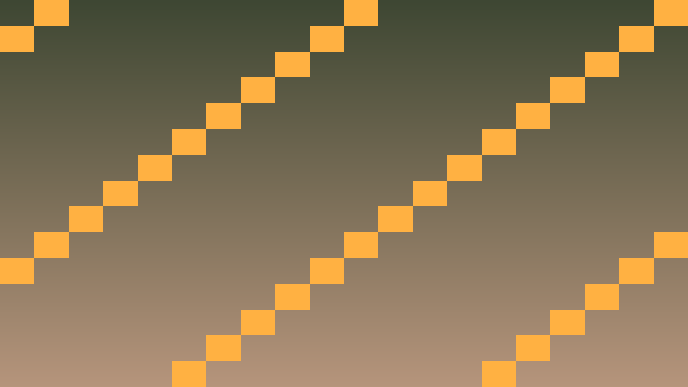

3.2 Inheritance (mantošana) C# un Godot
Stundas uzdevums: Izveidot specializētas dalībnieku class (klases), izmantojot inheritance.
80 min plāns: Teorija un paraugs (~10 min) · 1. uzdevums (~20 min) - izveido derived class (bērna klasi) · 2. uzdevums (~25 min) - pārraksti method (metodi) ar override (metodes pārrakstīšana) · 3. uzdevums (~20 min) - izsauc visas lomas vienā loop (ciklā) · Iesniegšana (~5 min).
Pirms sāc: atver savu Participant class no 3.1 stundas. Šodien no vienas class taisīsi vairākas lomas, nekopējot kodu.
Teorija: Inheritance un virtual function (virtuālas funkcijas)
Inheritance ļauj bērna class pārmantot vecāka attribute (atribūtus) un method, pievienojot vai pārrakstot.
public class Participant { /* base klase */ }
public class Captain : Participant
{
public int Stability;
public Captain(string name) : base(name, 150, 18, 12) // izsauc vecāku konstruktoru
{
Stability = 10;
}
// Pārraksta (override) vecāka metodi
public override void ApplyPenalty(int amount)
{
amount -= Stability; // stabilitāte samazina soda punktus
base.ApplyPenalty(amount);
}
}
public class Presenter : Participant
{
public int Ideas = 100;
public Presenter(string name) : base(name, 80, 25, 3) { }
public void PresentBonus(Participant target)
{
if (Ideas >= 20)
{
Ideas -= 20;
target.ApplyPenalty(40);
}
}
}virtual (pārrakstāma metode) keyword (atslēgvārds) ļauj izsaukt bērna method caur vecāka pointer (rādītājs) (polymorphism (polimorfisms)).
Kā šo izmantot projektā
Atceries: ar redzamu efektu redaktorā nepietiek. Paskaidro, kura C# class glabā stāvokli, kura method to maina un kā Godot node (mezgls) struktūra izmanto šo kodu.
Pārbaudi: katrai būtiskai turnīra lomai ir C# class vienā .cs failā, ar constructor (konstruktoriem), method, signal (signāliem) vai inheritance.
public class OopCheckpoint
{
public string Lesson = "3.2 Mantošana C# un Godot";
public bool UsesCSharp = true;
public bool HasScriptFile = true;
public bool HasSingleResponsibility = true;
public bool UsesGodotInspector = true;
}Praktiskie uzdevumi
1. uzdevums -
Izveido derived class
Beigās jaunā class mantos visu no vecāku class.
- Izveido failu
Captain.cs. - Ieraksti
public class Captain : Participant { }. - Pievieno constructor
public Captain(string name) : base(name, 150) { }. - Pievieno privātu field (lauku)
private int stability = 10;. - Izveido object (objektu)
Captain c = new Captain("Anna");un izsauc tamIsActive(). - Pieraksti, no kurienes šī method radās, ja tu to
Captainclass nerakstīji. - Izdzēs
: base(name, 150)daļu, būvē projektu un izlasi kļūdu.
Gatavs, kad: bērna object strādā vecāka method, bet bez vecāka constructor izsaukuma kods nekompilējas.
2. uzdevums -
Pārraksti method ar override
Beigās kapteinis sodu izturēs labāk nekā parasts dalībnieks.
- Pievieno vecāka class keyword
virtualpirmsApplyPenalty. - Pievieno
Captainclasspublic override void ApplyPenalty(int amount). - Ieraksti tajā
amount = Math.Max(1, amount - stability);. - Izsauc pēc tam vecāka versiju ar
base.ApplyPenalty(amount);. - Izmēģini vienādu sodu abiem: parastam dalībniekam un kapteinim.
- Pieraksti, cik enerģijas katrs zaudēja.
- Izdzēs
virtualvārdu, būvē projektu un pieraksti, kas mainās.
Gatavs, kad: ar vienādu sodu kapteinis zaudē mazāk enerģijas nekā parasts dalībnieks.
3. uzdevums -
Izsauc visas lomas vienā loop
Beigās viens loop apkalpos jebkuru lomu skaitu.
- Izveido vēl vienu derived class
Presenterar citu enerģiju. - Pārraksti arī tai
ApplyPenaltysavā veidā. - Izveido
List<Participant> party = new();. - Pievieno tam pa vienam object no katras class.
- Uzraksti loop, kas katram izsauc
ApplyPenalty(20). - Izdrukā pēc loop katra vārdu un atlikušo enerģiju.
- Pieraksti, kāpēc loop nezina, kura loma tam tiek padota.
Gatavs, kad: viens loop apstrādā visas lomas, un katra zaudē atšķirīgu enerģijas daudzumu.
Papildu uzdevums - Pievieno trešo lomu
Ja pamatdarbs ir gatavs, paplašini hierarhiju.
- Izveido class
TimeKeeperar mazāku enerģiju, bet lielāku ātrumu. - Pārraksti tai
ApplyPenaltytā, lai tā zaudētu vairāk. - Pievieno to sarakstam.
- Palaid loop vēlreiz un pārbaudi, vai kods bija jāmaina.
- Pieraksti, cik rindu bija jāpieraksta loop.
Gatavs, kad: trešā loma darbojas loop, un pašā loop nebija jāmaina neviena rinda.
Ko sagatavo
Stundas mērķis: Tu proti izveidot derived class ar C# inheritance, izsaukt vecāka constructor, pārrakstīt method ar virtual un override un apstrādāt visas lomas vienā loop.
GitHub krātuvē jābūt:
- Faili
Captain.csunPresenter.cs. - Ekrānuzņēmums ar Output paneli, kurā redzams, ka pēc vienāda soda lomām palikusi atšķirīga enerģija.
- README.md: kas notiek, ja no vecāka method noņem
virtual.
Kā iesniedz: Veic commit (izmaiņu fiksējums) un push (nosūtīšana uz attālo krātuvi). Skolotāja norādītajā vietā ievieto tikai GitHub krātuves saiti; visiem prasītajiem failiem, README.md pierakstiem un pierādījumiem jābūt pašā krātuvē.
Biežākās kļūdas
- Cannot call base constructor (nevar izsaukt bāzes konstruktoru): Trūkst initializer list (inicializēšanas saraksts) ar
: Participant(...). - 'override' was not declared (override nav deklarēts): C#11+ vajadzīgs (Godot prasa C#17).
- Slicing problem (objekta daļas nogriešanas problēma): Pieliecot Participant object, ne Participant*, polymorphism nedarbojas.
Godot ekrānuzņēmumi

Koda piemērs (paplašināts)
using Godot;
using System;
public class Captain : Participant
{
private int stability = 10;
public Captain(string name) : base(name, 150, 18, 12) { }
public override void ApplyPenalty(int amount)
{
amount = Math.Max(1, amount - stability);
base.ApplyPenalty(amount);
}
}
public class Presenter : Participant
{
private int ideas = 100;
public Presenter(string name) : base(name, 80, 25, 3) { }
public void PresentBonus(Participant target)
{
if (ideas >= 20)
{
ideas -= 20;
GD.Print(Name, " izmanto prezentācijas bonusu pret ", target.Name);
target.ApplyPenalty(40);
}
}
}